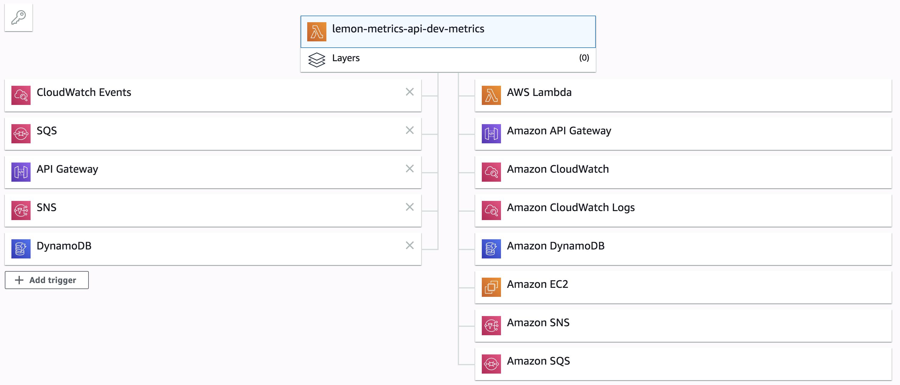
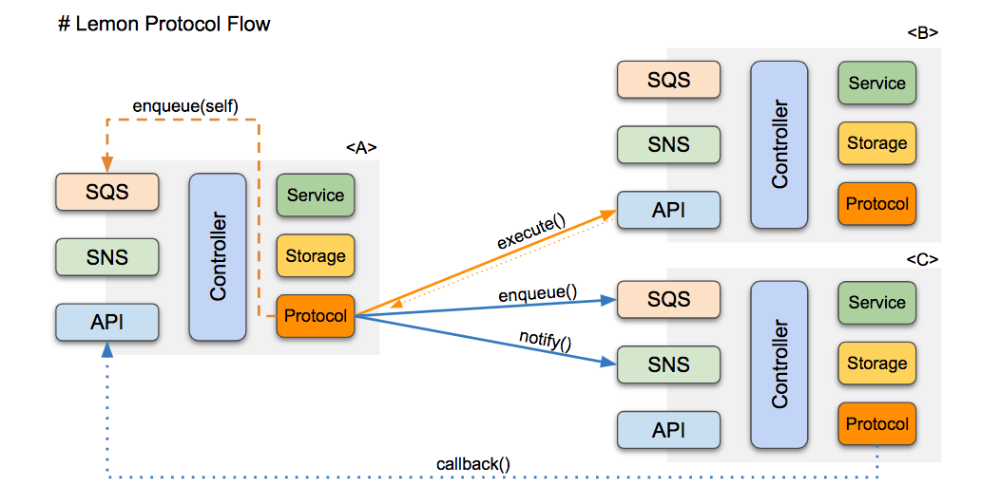

lemon-core
Lemon Core Bootloader for Serverless Micro-Service
Support
multipleevent sources with single lambda function as below figure.Fully support
typescripttypes (80%).Support Data Synchronization to
ElasticsearchfromDynomoDBviaDynamoStream. <img src="media://assests/2019-11-26-23-43-47.png" alt='alt text">
Architecture
Basic MicroService Architecutre with API + SNS + SQS.
NextHandler: basic controller method to handle user serviceNextDecoder: mapper fromhttpMethod + id + cmdtoNextHandlerNextContext: initial requester's context withidentity.
Protocol Service
support inter-communication between micro services
execute(): synchronized call via lambda execution byAPIHandler.notifiy(): async call bySNShandler w/ lambda callback.enqueue(): async call bySQShandler w/ lambda callback.broadcast(): publish message viaSNS, and handled byNotificationhandler.
import $engine, { ProtocolParam, ProtocolService, CallbackParam } from 'lemon-core';
// use the internal instance from $engine.
const service: ProtocolService = $engine.cores.protocol.service;
const protocol: ProtocolParam = service.fromURL(context, 'api://lemon-hello-api/hello/echo', param, body);
const callback: CallbackParam = { type: 'hooks', id: `${id}` };
// queue protocol in 30 seconds delayed.
const queueId = await service.enqueue(protocol, callback, 30);Usage
- install
lemon-coremodule (>= 2.1.0).
$ npm install lemon-core --saveTODO - TBD in detail.
Contribution
Plz, request PR.
See CODE_OF_CONDUCT
LICENSE
MIT - (C) 2019 LemonCloud Co Ltd. - All Rights Reserved.
TODO TASK
- use environ as default region like
ap-northeast-2(or use current region). - draw protocol's sequence diagram w/
callbackmechanism. - on protocol, use local account name as accountId for NextContext.
- for protocol.enqueue(), use the optional delayed wait time.
- notification-handler is directly subscribed to
SNSlikelemon-hello-out.
VERSION INFO
| Version | Description |
|---|---|
| 3.1.2 | refactoring with lemon-model@1.0.0 for shared types. |
| 3.1.1 | support ManagerProxy, AbstractProxy and $ES6. (x-lemon-identity as WebToken) |
| 3.1.0 | upgrade typescript^4.6.2, and optimized. |
| 3.0.2 | support helpers like $T. |
| 3.0.0 | improve search-client with @elastic/elasticsearch@7.12 to support AWS OpenSearch 1.1 (compartible with ES6.2). |
| 2.2.20 | improve an extra feature from aws-s3-service to 'lemon-images-api' |
| 2.2.19 | improve search filtering feature for ES6 autocomplete search. |
| 2.2.18 | support $U.jwt(passcode).encode(...) w/ jsonwebtoken. |
| 2.2.16 | hot-fix utf8 encoding of json in AWS.S3. |
| 2.2.15 | hot-fix Cannot read property 'setIndex' of null in Dynamo. |
| 2.2.14 | support CacheService, and support appending entry into list in Dynamo. |
| 2.2.13 | improve LambdaWEBHandler to support custom web-response including headers. |
| 2.2.12 | improve AWSS3Service to use pure JS image library because of AWS compatibility issue. |
| 2.2.11 | improve AWSS3Service by adding handy method and metadata+tag handling |
| 2.2.10 | improve Access-Control-Allow-Origin w/ Access-Control-Allow-Credentials: true. |
| 2.2.9 | support content-type:application/x-www-form-urlencoded form data. |
| 2.2.6 | improve search, and support cookie in NextContext. |
| 2.2.5 | support Access-Control-Allow-Headers for CORS. |
| 2.2.3 | support x-lemon-language header in identity. |
| 2.2.0 | support AbstractManager for the template of model managers. |
| 2.1.17 | support filter() in DynamoStream. |
| 2.1.16 | improve lock() w/ 404 error, and .aggregations in QueryResult. |
| 2.1.14 | support hash param for MocksAPIService. |
| 2.1.13 | support HttpStorage, $U.crypto2, and /favicon.ico. |
| 2.1.12 | support userAgent in NextContext. |
| 2.1.11 | improve syncToElastic6, and DynamoScanService. |
| 2.1.10 | support loadProfile(), and lookup-id style. |
| 2.1.8 | improve express of request-context. |
| 2.1.7 | improve TypedStorageService w/ save(). |
| 2.1.5 | support GeneralAPIController along w/ UniqueFieldManager. |
| 2.1.3 | support asNextIdentityAccess() for access identity. |
| 2.1.2 | support ProxyStorageService for shared common storage. |
| 2.1.1 | support enqueue() with delayed-seconds. |
| 2.1.0 | support ProtocolService for inter communication of micro-services. |
| 2.0.10 | support to display the current name/version by GET /. |
| 2.0.9 | improve Elastic6Service + Elastic6QueryService. |
| 2.0.8 | improve APIService w/ mocks data. |
| 2.0.7 | improve StorageService along w/ dummy-storage-service. |
| 2.0.6 | support CoreWEBController, and lambda.cores.web.addController(...) |
| 2.0.5 | support APIService, and fix engine.initialize() |
| 2.0.3 | support StorageService along with DynamoStorageService |
| 2.0.0 | improve lemon-engine, and support typescript fully. |
| 1.2.15 | improve doReportError with error message |
| 1.2.12 | support doReportMetric() for saving metric data. |